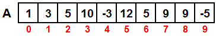

|
|
| . |

Objetivo:

Forma de trabajo: Actividad individual
Tiempo estimado: 90 minutos 
Instrucciones:

Ejercicios: 1.El procedimiento inicializaVector, que recibe un vector de 10 valores enteros. El procedimiento deberá llenar cada localidad del vector con valores aleatorios entre -10 y 20. 2. Implementa el procedimiento capturaVector, que recibe un vector de 10 valores enteros. El procedimiento deberá pedir un valor entero al usuario y lo almacenará en la localidad correspondiente del vector; se pedirá un valor 10 veces (hasta llenar el vector).Ejemplo:3. Implementa el procedimiento imprimeVector, que recibe un vector de 10 valores enteros. El procedimiento deberá desplegar en pantalla el contenido del vector.capturaVector(vector);Al terminar el procedimiento el vector tendrá almacenados todos los números introducidos por el usuario en ese mismo orden. 4. Implementa la función cuentaPares, que recibe un vector de 10 valores enteros. La función regresa cuantos elementos del vector son pares. Ejemplo:5. Implementa la función mayorVector que recibe un vector de 10 valores enteros. La función deberá regresar el elemento de mayor valor contenido en el arreglo.Suponiendo que el vector tiene asignados los siguientes valores: 6. Implementa el procedimiento mueveVectorDerecha, que recibe como parámetro, un vector de 10 valores enteros. El procedimiento debe de mover los valores cada localidad del arreglo a la siguiente localidad a la derecha y el último valor debe pasar a la primera localidad. Ejemplo: Suponiendo que el vector original tiene asignados los siguientes valores:  Al aplicar el procedimiento mueveVectorDerecha(vector) el vector quedaría con los siguientes valores:
1. Inicializa vector 
Forma de entrega:
INSTRUCCIONES PARA ENVIAR TU TAREA POR CANVAS |